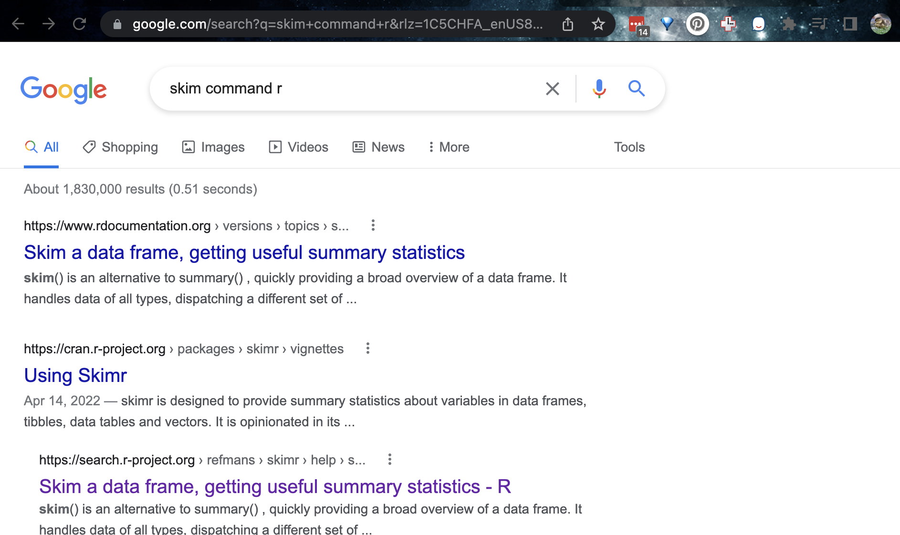

Tutorial 1: R Basics
Basics
What are R and R studio?
R is a LANGUAGE
R is a free, open source statistical programming language. It contains millions of commands that are useful for data cleaning, analysis, and visualization.
By a “programming language”, I mean it is a collection of commands that you can type into the computer in order to analyse and visualise data.
The easiest way I find to think about R is that it is literally a language, like Spanish or Hindi, that is spoken by your computer. Learning R means learning vocabulary and grammar in order to communicate. It also means it will get easier with experience and practice..
R-STUDIO is a Software Environment
R-studio is a software environment, e.g a programmed designed to make it easy to write code in “R”.
It has many useful features. For example, you can easily see help files, run code, see your output and create outputs like this lab book! R-Studio also allows us to make interactive documents called R-Markdown files.
TO DO! Watch this
Watch this 1 minute video on R-Studio: https://www.rstudio.com/products/rstudio/
Or, if you prefer, this 5 minute video
R-Projects
An R-project is a folder that will store everything to do with each lab in one place on your computer. On the website, each lab will be its own project.
This is incredibly useful - it means that if you switch from R-Cloud, to the lab computers, to your laptop, all you have to do is to move the folder and everything will just work. Equally, its easy to compare labs.
Learn more here. You will have a project for each Lab and I may share projects with example code.

Accessing R
There are two ways to do the labs, on your own computer or on the R studio Cloud website.
- DESKTOP: Means do this if you are using your own computer or laptop
- CLOUD: Means do this if you are using the website
R studio Cloud
The easiest way to get R-studio is to simply to use the R-Studio Cloud website
Here you can log into an online version of R. and I believe is free for the first 25hrs each month. Like Jupyter Notebook, you can also programme in other langauges. If you need more time, you can make a new account, or pay for one month, or move to your desktop.
- Advantages:
- Super Easy. You will never have to worry about versions or updating.
- Projects are incredibly easy and I can debug things fast
- You can do your labs anywhere you have access to a webpage
- Disadvantages:
- It’s not as powerful, you won’t be able to play will millions of data points
- You have to be online; bad internet connections make it harder
To sign up, make an account at https://rstudio.cloud/plans/free, then click the tabs here to look around. Sadly there is no student pricing right now.
Getting started on the cloud
Once you have logged in, you will get to a dashboard like this, called the R-studio workspace. You make a new project by clicking the button on the top right. You can open different projects in different tabs on your browser. You can also go back to the work-space at any time.
You can get here from any web-browser, You do not need a special computer.

Returning to your lab project
On the cloud this is very easy, just go back to https://rstudio.cloud/content/yours
Downloading files
Ignore this until later on and you need to submit your lab.
You will need to submit two files for each lab, an “.Rmd” and a “.html”. More later on those, but here is how to download them so you can submit them
On the R-Studio Cloud website; inside your project, go to the files tab (next to Projects/Help in one quadrant. You will see a list of files, one with the file type .Rmd (your code) and one with .html(the website you made when you pressed knit). Look at the red circle in the pic below
Click the checkbox to the left the .RmD
Look just above at the Files quadrant settings menu. Click the blue “more” cogwheel icon. (see diagram)
Now click export. This will download the file and export it to Canvas s
REPEAT FOR THE HTML (you can do them together but it exports as a zip)

Uploading files
Simply click the upload button inside your project in the files tab and upload your files. You do not need subfolders.
R Desktop
If you have your own computer, you can run R-Studio for free on there.
- Advantages:
- Its powerful and we will learn how to use and update it
- No need for the internet
- You can play with millions of data points
- Disadvantages:
- It can be annoying to install and update, especially on old computers.
- You are tied to your laptop/computer (although you can uplaod your files to the cloud)
The “VERSION” of R you use is important!
If you already have R and/or R-Studio, it is very important you update BOTH of them to the most recent version. To do so, pretend you are installing them from scratch. If you are worried this will affect another class, chat with Dr Greatrex before starting out.
Why?
Just as English has evolved over the years, the R language is always evolving. We keep track using Versions.
To make sure we are all on the same page, you need the most up-to-date version of the R commands.
The version of R I am using is :
[1] "R version 4.2.2 (2022-10-31) Innocent and Trusting"As long as yours is that or above that you should be fine. The current most recent version of the language on the website is:
[1] "The latest release (2022-10-31, Innocent and Trusting)"Installing/updating R.
On a PC:
To make R-Studio run on your computer, you need to download TWO things: [1] A programme that teaches your computer the ability to “speak” in R and [2] The R studio software itself
[STEP 1 of 2] Download & install the R-language itself:
- Go to: https://cloud.r-project.org/bin/windows/base/ ,
- Download this version of R (the main download R for windows button)
[1] "The latest release (2022-10-31, Innocent and Trusting)"- Run and click next through all the options
[STEP 2 of 2] Download & install R studio:
- Go to: https://www.rstudio.com/products/rstudio/download/#download> ,
- download R studio for windows
- Run and click next through all the options
On a Mac:
To make R-Studio run on your computer, you need to download TWO things: [1] A programme that teaches your computer the ability to “speak” in R and [2] The R studio software itself
[STEP 1 of 2] Download & install the R-language itself for mac:
- Go to:https://cloud.r-project.org/bin/macosx/ ,
- download this version of R (the .pkg file on the left menu)
[1] "The latest release (2022-10-31, Innocent and Trusting)"- Run and click next through all the options
[STEP 2 of 2] Download & install R studio for mac:
- Go to: https://www.rstudio.com/products/rstudio/download/#download> ,
- download R studio for Mac
- Run and click next through all the options
Using Projects on R-Desktop
IMPORTANT! If you haven’t already, on an easy to access place on your computer, make a folder called GEOG-364. This is where ALL your labs are going to live.
Now everything is installed, open R-studio (NOT R!).

Go to the file menu at the very top and click
New ProjectSelect
New Directory, thenNew ProjectName your project GEOG364-Lab1-PROJECT (or whatever lab)
Under “create project as a subdirectory of”, hit the browse button and go inside your GEOG-364 main folder (you just need to be in the folder, you don’t need to have selected anything). Press open
Finally, press
Create Project

How to check you are in a project
R will change slightly. If you look at the top of the screen in the title bar, it should say something like GEOG364-Lab1-Project R Studio.
The Files tab should have gone to your project folder. Essentially, R-Studio is now “looking” inside your Lab 1 folder, making it easier to find your data and output your results.

Essentially, R-Studio is now “looking” inside your Lab 1 folder, making it easier to find your data and output your results.
If you want one, final check, try typing this into the console (INCLUDING THE EMPTY PARANTHESES/BRACKETS), press enter and see if it prints out the location of Lab 1 on your computer. If not, talk to an instructor.
getwd()Returning to your lab project
OK, let’s imagine that you get halfway through your lab and your computer dies. How do you get back to your Lab work? Try this now. Close down R-Studio.
To reopen a lab:
DO NOT RE-OPEN R-STUDIO!
Instead navigate on your computer to your GEOG-364/GEOG364-Lab1-Project folder.
Double click on the GEOG364-Lab1-Project.RProj file.
This will reopen R for that specific lab, so you can continue where you left off.
It means you can also open several versions of R studio for multiple projects, which can be very useful in keeping labs separate and staying sane.

Global settings
Want to understand more about what the screens do, or change the appearance. Here is the chapter for you.
The screen
You will be greeted by three panels:
- The interactive R console (entire left)
- Environment/History (tabbed in upper right)
- Files/Plots/Packages/Help/Viewer (tabbed in lower right)

If you wish to learn more about what these windows do, have a look at this resource, from the Pirates Guide to R: https://bookdown.org/ndphillips/YaRrr/the-four-rstudio-windows.html.
If you have used R before, you might see that there are variables and plots etc already loaded. It is always good to clear these before you start a new analysis. To do this, click the little broom symbol in your environment tab
Moving the 4 quadrants around
You might find you like the different quadrants in a different order. To change this, look at the menu at VERY TOP OF THE SCREEN.
- In the
Viewmenu, there is a/Panes/Pane Layoutmenu item, where you can move the on-screen quadrants around. I tend to like the console to be top left and scripts to be top right, with the plots and environment on the bottom - but this is personal choice.

- There should also be a menu called
Help
Useful for R-studio version and Markdown cheatsheets.
Changing settings
R-studio wants to be helpful and will try to re-load exactly where you were in a project when you log back in. This can get confusing, so we are going to turn this off.
There are two places you might find the options. Depending on how you are using R-studio, you will EITHER find it by:
- Click on the R-studio menu button on the top left of the screen, then click Preferences.
OR
- Click on the tools menu button on the top right of the screen,-> Global Options
Now:
UNCLICK “Restore most recently opened project at startup”
UNCLICK “Restore .RData into workspace on startup”
Set “Save workspace to .RData on” exit to Never
UNCLICK “Restore previously open source documents on startup”
You can also click the appearances tab to change how the screen looks.
R-Packages
There are three tabs here:
- A description of packages
- How to install one from the internet
- How to load and use it with the library() command
What are packages?
As described earlier, we program in R by typing a series of commands. R is open source meaning anyone can create a new one, so over the last 20 years,tens of millions of new custom commands have been created.
Commands tend to be grouped together into collections called Packages or Libraries (two names for the same thing). For example, one package contains the complete works of Shakespeare; another allows interactive website design; another allows advanced Bayesian statistics. There is a package for literally everything and there are now about 20,000 packages available. You can see the full list here: https://cran.r-project.org/web/packages/available_packages_by_name.html
This is far too many to store on your computer, so most live on the internet in an online (free) “Package Store”. You can download the ones you want, ready to load later.
So to access the commands in a package we need these two steps:
- ONCE ONLY: Download the package from the internet
- EVERY TIME: Load the packages you want
A close analogy is your phone: There are millions of apps available from banking, to 50 different calendar apps. You don’t have every app in the world installed on your phone - and you don’t have every app you do download running at the same time.
Instead you download the apps that you think you will need (occasionally downloading a new one on the fly) - and when you need to use an app, you click on it to open.
Downloading a new package
This is like going to the app store to get a new app. Just like you only go to the app store once, this is a one-off for each package.
- Look for the quadrant with the packages tab in it.
- You will see a list of packages/apps that have already been installed.
- Click the INSTALL button in the Packages tab menu (on the left)
- Start typing the package name and it will show up (check the include dependencies box). Install the package.
OR
- R will sometime tell you that you are missing a package (sometimes a little yellow ribbon), click yes to install!
Note, if you run this command multiple times, or the packages is already loaded, R-Studio might want to restart and sometimes gets confused. If it keeps asking, close R-studio, reopen and try again. If it really doesn’t want to work, open R itself and run in the console there.
Try installing the bardr package onto your computer
Using the commands inside a package
Just like you can’t use a phone app until you press the icon, just getting a package from the app-store doesn’t make the commands immediately available.
For that you need to load it (like clicking on an app). This can be done with the library() command.
In the console type this to install the full works of Shakespeare in the bardr package (https://www.rdocumentation.org/packages/bardr/versions/0.0.9)
library(bardr)I suggest keeping all your library() commands in a code chunk near the top of the file and
If you have managed to load a package successfully, often nothing happens - this is great! It means it loaded the package without errors. Otherwise, I suggest running this command TWICE! This is because loading packages will print “friendly messages” or “welcome text” the first time you load them.
For example, this is what shows up when you install the tidyverse package. The welcome text is indicating the sub-packages that tidyverse downloaded and also that some commands now have a different meaning.

To find out if what you are seeing is a friendly message or an error, run the command again. If you run it a second time and there is no error then nothing should happen.
Use a single command from a package
Sometimes multiple packages name a command the same thing and you want to specify which package you want to use. You can do this using the :: symbol
For example, this command forces the computer to use the ‘dplyr package’ version of filter.
dplyr::filter(mydata)R-Basics:
First watch this 5 min video above for some pointers. We will also go through the video more slowly below:
The Console
The console window (see Figure @ref(fig:Tut_Fig1)) is essentially a phone call with your computer, where you “speak” in R.
- The computer has a little
>symbol to say it is listening/waiting for your command - You type in a command
- The computer tries to carry it out and will print the answer directly onto the screen
Let’s start by the simplest command possible. Type this command into your R console and press enter to run.
1+1When you press enter, it should give you the answer…. 2
1+1[1] 2Type this command into your R console and press enter to run.
# Take the sine function of the number 2, like sin(2) on your calculator
sin(2)Here we have a command sin() applied to the number 2. We also have a comment in green, which the computer ignores.
Spacing and Capital Letters
Spacing mostly does not matter:
1+1will generate the same answer as1 + 1.- Exception: you cannot have a space between a command name and its ( ) e.g
sin (2)will fail`
- Exception: you cannot have a space between a command name and its ( ) e.g
Capital letters DO matter. R is case sensitive.
To see previous commands, you can click the history tab (Environment quadrant) or press the up/down arrows on your keyboard, but when you close R, all record of these commands will be lost.
## R as a calculator {#Tut3B_Calc}
When using R as a calculator, the order of operations is the same as you would have learned back in school, so use brackets to force a different order. For example, in either the console or a script, try running these two commands
3 + 5 * 2and
(3 + 5) * 2We can also take shortcuts with our numbers. For example 1:5 means take all the numbers 1 2 3 4 5 (e.g. increment the integers one - to - five). Try typing this command and make sure you understand the result.
(1 + 2) * 5:3[1] 15 12 9We can use this trick to make our first plot! Try entering this command and see what happens. It should plot these numbers against each other
x y
1 1 6
2 2 7
3 3 8
4 4 9
5 5 10plot(x= 1:5, y= 6:10,xlab="x-axis",ylab="y-axis")
Asking questions/comparisons
We can also do comparisons in R - using the special symbols TRUE or FALSE (no quote marks, they are special).
Here we are asking R whether 1 is equal to 1.
# note two equals signs is read as "is equal to"
1 == 1 [1] TRUEWe could also have used
!=“Not equal to”<“Less than”<=“Less than or equal to`>“Greater than”>=“Greater than or equal to”
Now ask the computer if the number 12 is less than or equal to the number 10.
The + symbol in the console
If you type in an incomplete command, R will understand and wait for you to complete it. For example, if you type 1 + and press enter, R will know that you are not finished typing. So it will move onto the next line but the > will have changed into a +, which means its waiting for you to complete your command.
If you want to cancel a command you can simply hit the “Esc” key or press the little stop symbol and R studio will reset.
Pressing escape isn’t only useful for killing incomplete commands: you can also use it to tell R to stop running code (for example if it’s taking much longer than you expect), or to get rid of the code you’re currently writing.
Functions/Commands
Watch this short video to learn three important facts about functions:
The power of R lies in its many thousands of these built in commands, or functions. In fact, we have already come across one - the plot command. A function, or command is simply an action you can take - like pressing the square root button on a calculator.
A command is always followed by parentheses ( ), inside which you put your “arguments” (e.g. the thing you want to take the square root of)
Try typing these EXACTLY into the console.
nchar("hello")- This will count the number of letters in the word “hello” (e.g.
- This will count the number of letters in the word “hello” (e.g.
file.choose()- This will open up an interactive window (sometimes behind the studio screen), choose any file and it will print the location in the console. NOTE WE STILL NEED THE PARENTHESES, but there are no arguments so they are empty.
To understand what I mean about parentheses, try typing each of these commands exactly and see what happens.
# Typing this into the console will print out the underlying code
file.choose
# Typing it WITH parentheses will run the command. Note for this command, the parentheses are empty!
file.choose()
# Typing a ? in front will open the help file for that command in the help quadrant
?file.chooseSometimes we need to give the command some additional information as an argument. Anything we wish to tell the command should be included inside the inside the parentheses (separated by commas). The command literally only knows about the stuff inside the parentheses.
sin(1) # trigonometry functions. Apply the sine function to the number 1.
log(10) # natural logarithm. Take the natural logarithm of the number 10.
nchar("hello") # Count the letters in the word helloWe can also add optional extra arguments. For example let’s improve our plot. This following command will plot the number 1 to 10 against the numbers 12 to 20, along with some axis labels. When you run this, the plot will show up in the plots tab.
# plot the numbers 1 to 10 against the numbers 11 to 20
plot(1:10,11:20,col="dark blue", xlab="x values",ylab="GEOG-364 is the best") 
If you are feeling lost, https://swcarpentry.github.io/r-novice-gapminder/01-rstudio-intro/ is a good website which goes over a lot of this in more detail.
Dealing with text
In R, the computer interprets most words as commands. But sometimes we need to actually input text, for example for a plot title. For the computer to understand text, you need quote marks. The computer will see anything without quote marks as a command.
For example, try typing print("Hello World") into the console and the computer should just repeat it back to you.Forget about the quotes and this happens..

Your first error. The “unexpected symbol” it’s talking about is the computer thinking that “Hello” and “world” must be two different commands, then getting confused by the space between Hello and World..
Variables
So now we can use R as a calculator and even add a few more complex commands. What we need to be able to do now is to save the results, or load in data so we can run more complex commands. We do this through assigning our results to a variable. By this I mean we save the results and give them a name, then in the future, instead of retyping the whole command, we simply type that name and R will recall the answer.
The symbol to store data into a variable is using the assignment arrow <-, which is made up of the left arrow and a dash. You can also use the equals sign, but it can cause complications later on. Try typing this command into the console:
x <- 1/50Notice that pressing enter did not print a value onto your screen as it did earlier. Instead, look down at the environment tab, you should notice that an x has turned up, with the result next to it.
So our variable x is now associated with the value 0.02, or 1/50. You can print a variable on screen by typing its name, no quotes, or by using the print command. Try printing out your variable.
x
# or
print(x)
# see what happens when you do this
print("x")This ‘x’ variable can be used in place of a number in any calculation that expects a number. Try typing
log(x)
# this is now the same as
log(1/50)The way R works is that first it looks for the commands on the right of the arrow. It runs all of them, calculates the result, then saves that result with the name on the left of the arrow. It does not save the command itself, just the answer. For example, in this case, R has no idea that x was created using maths, it just knows that it is equal to the number 0.02.
Notice also that variables can be reassigned. Type this into your console.
x <- 100
print(x)x used to contain the value 0.025 and and now it has the value 100.
Note, the letter x isn’t special in any way, it’s just a variable name. You can replace it with any word you like as long as it contains no spaces and doesn’t begin with a number.
for example
vlogbrothers.DFTBA <- "Dont forget to be awesome"
print(vlogbrothers.DFTBA)How you name stuff is up to you, , but be consistent. Different people use different conventions for long variable names, these include
- periods.between.words.1 (as you can see, I like this)
- underscores_between_words
- camelCaseToSeparateWords
Finally, R IS CASE SENSITIVE. X and x are different variables! Try these and you will see both appear separately in your environment tab.
h <- 1
H <- 2
ans <- h+H
print(ans)print(h)print(H)To delete a variable, you can use the rm() command e.g.
rm(x)and to clear everything, type
rm(list=ls())Combining variables
As I showed above, you can now use multiple variables together in more complex commands. For example, try these commands:
x <- 2
#Take the variable x, add 1 then save it to a new variable called y
y <- x + 1
# print the multiple of 2yx onto the screen
print(2*y*x)Now you can see that there are two variables in your environment tab, x and y. Where y is the sum of the contents of x plus 1.
You can even use this to change your original variable . Try typing the code below in a few times into the console and see what happens.
A short cut to do this is to type the commands the first time, then use the up-arrow on your keyboard to cycle back through previous commands you have typed
x <- x + 1 # notice how RStudio updates its description of x in the environment tab
x # print the contents of "x" onto the screenOur variables don’t have to be numbers. They could refer to tables of data, or a spatial map, or any other complex thing. We will cover this more in future labs.
## Variables and Commands (functions)
Getting help
First, take a look here to learn about help - https://www.r-project.org/help.html
When programming in R, someone often tells you about a “cool new command”. I want you to feel comfortable working out how to use them. Equally, sometimes R crashes because it can’t find a command. So this helps you find what you need to install.
How to use the R help files
Here’s how I approach it
- The only info we NEED to know about a new command is its name and the library/package/app it is stored in.
If you don’t know, you can often google the command, and go to one of the websites with an online helpfile
Different websites have different ways of writing the things. For example, here are four common files you might see when looking at the mutate command which is a part of the dplyr package.


HINT FOR LAB 2, THE COMMAND ITSELF IS CALLED qtm…
- If you need to install the package, go to the Packages menu in the quadrant and click install.
- Add the
library(PACKAGENAME)command to your library code chunk and run to load the package.
- Immediately go to the help file for the command you want to run. You can do this in the help menu next to the packages menu, or using a ? in the CONSOLE e.g.
?skim. This will not work if you have not loaded the library.
- Inside every help file you will see this structure (SKIM THIS EXTERNAL: TUTORIAL)[https://bcgov.github.io/ds-cop-intro-to-r/seeking-help-in-r.html].
- FINALLY, Scroll to the bottom of the helpfile for some worked examples that you can literally copy and paste into your console or your code to understand how it works.
HINT FOR LAB 2, SCROLL ALL THE WAY TO THE VERY BOTTOM OF THE HELP FILE
EXAMPLE! Understanding skim
I was told last year about a new summary command, skim. Here’s how it ended up in your lab instructions
- I googled ‘skim r command’. This took me quickly to the R documentation page

- I ended up at this website: https://search.r-project.org/CRAN/refmans/skimr/html/skim.html. From this I saw that the
skim()command is in theskimrpackage*

- I added the
skimrpackage to my library code chunk and re-ran
# LIBRARIES
library(tidyverse)
library(dplyr)
library(ggpubr)
library(ggplot2)
library(plotly)
library(skimr) - In the console, I FIRST typed
> ?skimrto read about the package itself (e.g. ?PACKAGENAME). This doesn’t work if you didn’t run the library code chunk first.
- In the console, I THEN typed
> ?skimto bring up the help file and scrolled to the bottom. This doesn’t work if you didn’t run the library code chunk first. Inside every R help file you will see this structure: https://bcgov.github.io/ds-cop-intro-to-r/seeking-help-in-r.html but for now, I scrolled to the bottom.
<br>- I then ran the help file worked examples in the console to understand the command. It looks like skim is a nice summary command I can apply to a table (in their case the iris table). And that’s how it ended up here..
skim(iris)| Name | iris |
| Number of rows | 150 |
| Number of columns | 5 |
| _______________________ | |
| Column type frequency: | |
| factor | 1 |
| numeric | 4 |
| ________________________ | |
| Group variables | None |
Variable type: factor
| skim_variable | n_missing | complete_rate | ordered | n_unique | top_counts |
|---|---|---|---|---|---|
| Species | 0 | 1 | FALSE | 3 | set: 50, ver: 50, vir: 50 |
Variable type: numeric
| skim_variable | n_missing | complete_rate | mean | sd | p0 | p25 | p50 | p75 | p100 | hist |
|---|---|---|---|---|---|---|---|---|---|---|
| Sepal.Length | 0 | 1 | 5.84 | 0.83 | 4.3 | 5.1 | 5.80 | 6.4 | 7.9 | ▆▇▇▅▂ |
| Sepal.Width | 0 | 1 | 3.06 | 0.44 | 2.0 | 2.8 | 3.00 | 3.3 | 4.4 | ▁▆▇▂▁ |
| Petal.Length | 0 | 1 | 3.76 | 1.77 | 1.0 | 1.6 | 4.35 | 5.1 | 6.9 | ▇▁▆▇▂ |
| Petal.Width | 0 | 1 | 1.20 | 0.76 | 0.1 | 0.3 | 1.30 | 1.8 | 2.5 | ▇▁▇▅▃ |
# Use tidyselect
skim(iris, Species)| Name | iris |
| Number of rows | 150 |
| Number of columns | 5 |
| _______________________ | |
| Column type frequency: | |
| factor | 1 |
| ________________________ | |
| Group variables | None |
Variable type: factor
| skim_variable | n_missing | complete_rate | ordered | n_unique | top_counts |
|---|---|---|---|---|---|
| Species | 0 | 1 | FALSE | 3 | set: 50, ver: 50, vir: 50 |
skim(iris, starts_with("Sepal"))| Name | iris |
| Number of rows | 150 |
| Number of columns | 5 |
| _______________________ | |
| Column type frequency: | |
| numeric | 2 |
| ________________________ | |
| Group variables | None |
Variable type: numeric
| skim_variable | n_missing | complete_rate | mean | sd | p0 | p25 | p50 | p75 | p100 | hist |
|---|---|---|---|---|---|---|---|---|---|---|
| Sepal.Length | 0 | 1 | 5.84 | 0.83 | 4.3 | 5.1 | 5.8 | 6.4 | 7.9 | ▆▇▇▅▂ |
| Sepal.Width | 0 | 1 | 3.06 | 0.44 | 2.0 | 2.8 | 3.0 | 3.3 | 4.4 | ▁▆▇▂▁ |
skim(iris, where(is.numeric))| Name | iris |
| Number of rows | 150 |
| Number of columns | 5 |
| _______________________ | |
| Column type frequency: | |
| numeric | 4 |
| ________________________ | |
| Group variables | None |
Variable type: numeric
| skim_variable | n_missing | complete_rate | mean | sd | p0 | p25 | p50 | p75 | p100 | hist |
|---|---|---|---|---|---|---|---|---|---|---|
| Sepal.Length | 0 | 1 | 5.84 | 0.83 | 4.3 | 5.1 | 5.80 | 6.4 | 7.9 | ▆▇▇▅▂ |
| Sepal.Width | 0 | 1 | 3.06 | 0.44 | 2.0 | 2.8 | 3.00 | 3.3 | 4.4 | ▁▆▇▂▁ |
| Petal.Length | 0 | 1 | 3.76 | 1.77 | 1.0 | 1.6 | 4.35 | 5.1 | 6.9 | ▇▁▆▇▂ |
| Petal.Width | 0 | 1 | 1.20 | 0.76 | 0.1 | 0.3 | 1.30 | 1.8 | 2.5 | ▇▁▇▅▃ |
- Finally, I googled tutorials to see if there was a friendlier way of looking: https://docs.ropensci.org/skimr/reference/skim.html
Scripts and Markdown
You might wonder at this point about how to save your work.
Typing into console is like having a phone call with your computer; you’re talking but you’re not keeping records of what you say. To see previous commands, you can click the history tab (Environment quadrant) or press the up/down arrows on your keyboard, but when you close R, all record of these commands will be lost.
We need instead is a way to save the commands for future use - we can do this using scripts.
There are several types of document, or script that you can create and save in R-Studio. There are about 20 options in the file menu. Here are a few important ones
Types of script
A Basic R script (.r) [IGNORE]
WE WILL NORMALLY IGNORE THIS OPTION, but it’s useful for a lot of programming and zero writing
- This is simply just a blank notepad where you can save code commands. (How I learned to code)
- You do NOT save any output
R-Markdown
Typing console is a phone call to the computer, you’re talking but you’re not keeping records of what you say (you can always press the up key to see previous commands but that’s about it). When you close R, everything you have done will be lost. As you might have seen, a basic R script is only one step better!
In this course we are going to focus on the R-Markdown format and you are going to submit your labs as websites/html files along with your code.
Markdown is cool.
Imagine a normal Microsoft Word document, but halfway through you can press a button and a mini R console appears. You type your code inside the mini console, it runs and puts the plots/output just below - then you leave the console and continue writing about the results. Essentially you never have to take another screenshot of results and move it to your output… Rmd files are also flexible. You can turn them into reports, websites, blogs, presentations or applications with a few short commands.
Read more here: https://rmarkdown.rstudio.com or watch this short video
Markdown Basics
Your file contains some friendly text to explain what is going on, which I have annotated here. Read the file and see what it says.

Creating a markdown document
Save your R-script to your Lab 1 folder and close it.
Time to make your own. Go to the File menu on the top left, then click New File - R-Markdown. If this is your first time ever, it might ask to download some packages to be able to do this. Say yes.
Eventually a window will open up:

It will ask you to name and save your file. Give it a relevant name. A new file should appear on your screen. At the top of that window (by the knit button, there is a “knit button”. Click that and it should make a website and autosave it for you. Make sure your email ID is somewhere in there.

The new file on your screen is your first markdown script. Essentially, we have some space for text, some space for code, and a space at the top of the file where we can add information about themes/styles etc.
Knitting
The file on your screen isn’t the finished article. To see how it will look as a final version, we need to “knit” it. Go to the top of the .Rmd file, find the knit button. Press it (you might have to first save your script if you haven’t already, then press it again)
You should see that the Markdown tab “builds” your document and you get an output as a website. The html should also be saved into your project folder. For example, from my other class, here is a file with markdown and knitted output.